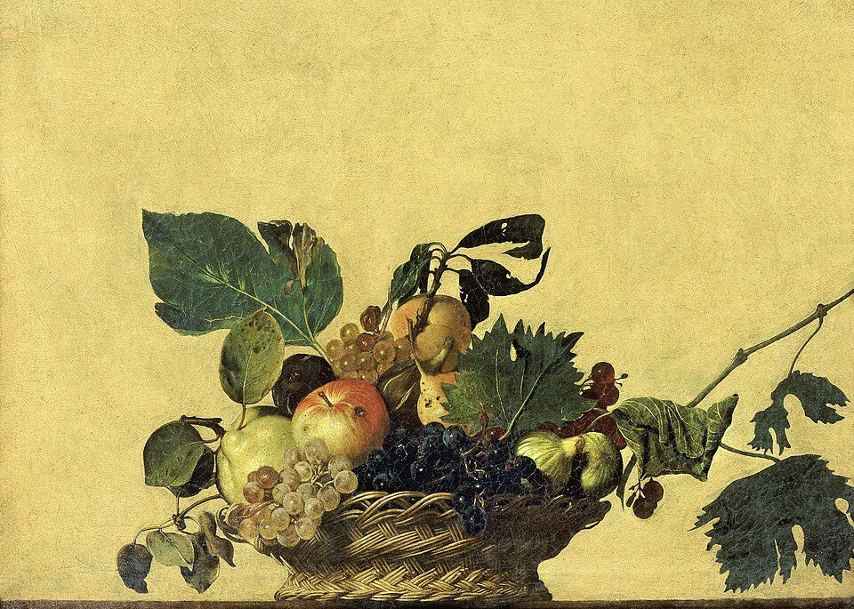
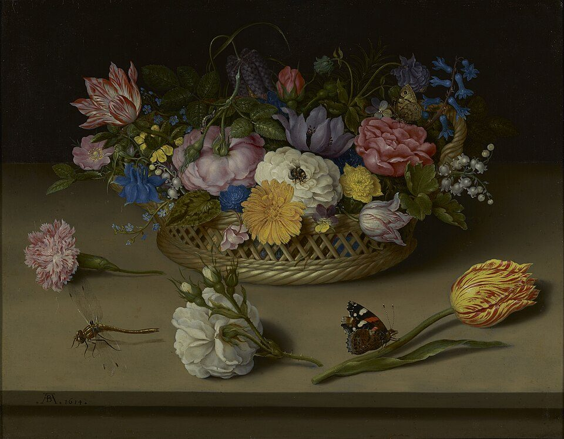
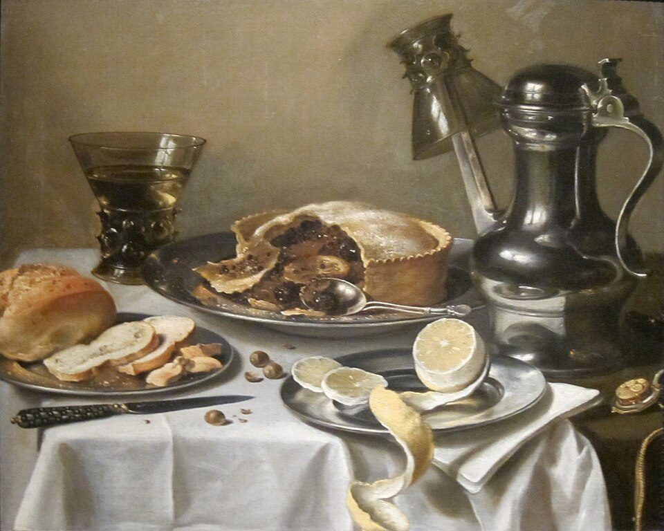
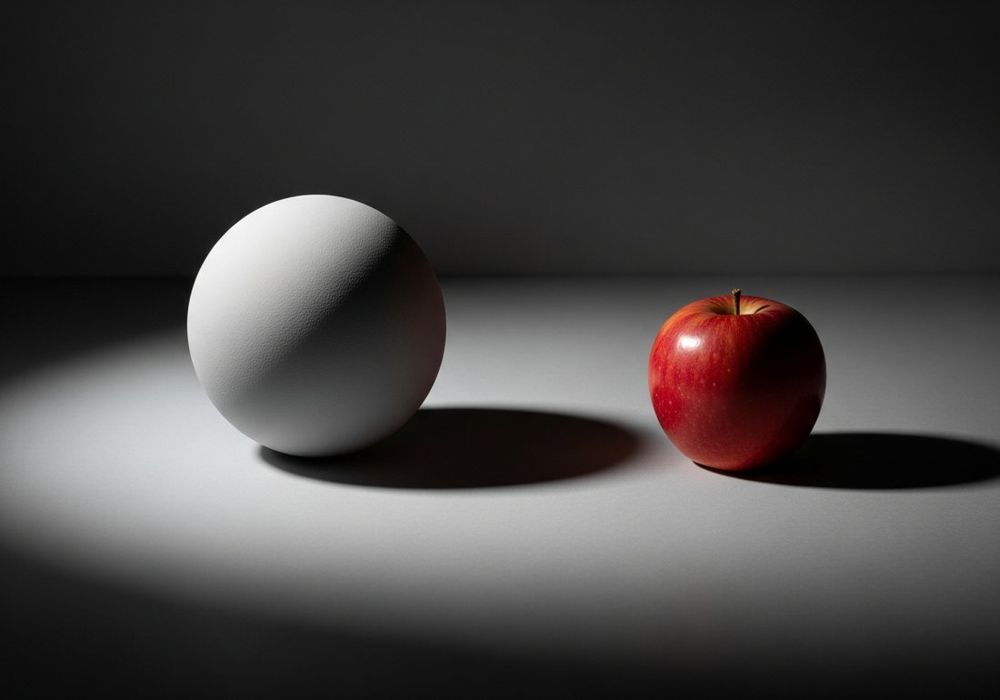
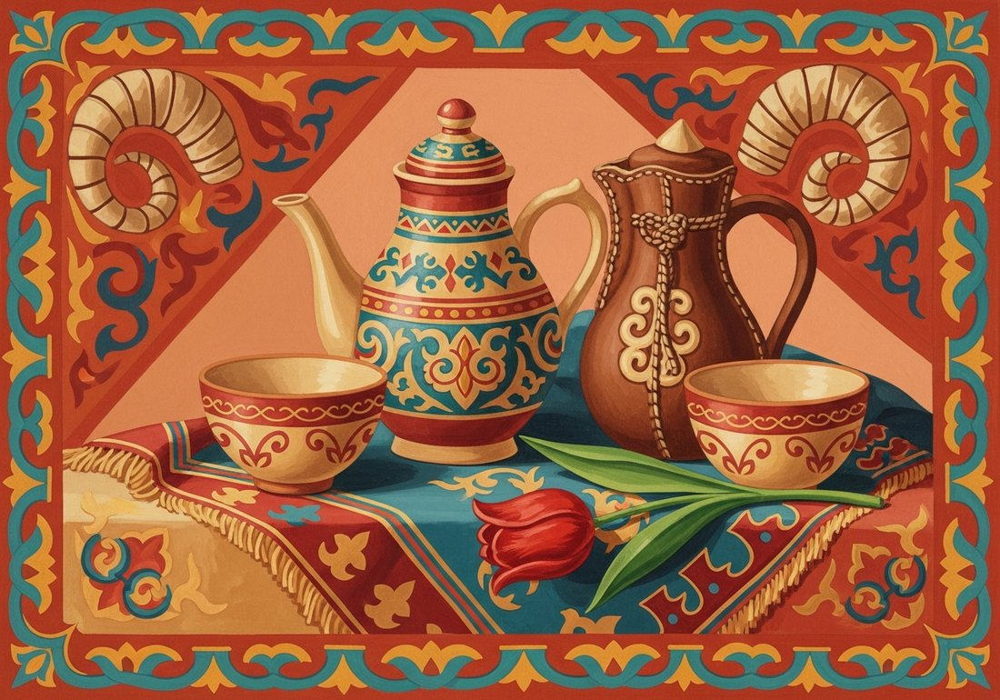

Көркем еңбек · 1-бөлім · Бейнелеу өнері Art & Craft · Section 1 · Visual Arts Художественный труд · Раздел 1 · Визуальное искусство
«Заттардың тыныш тіршілігі» — өнердегі заттар әлемі. “The quiet life of things” — the world of objects in art. «Тихая жизнь вещей» — мир предметов в искусстве.
Натюрморт (фр. nature morte — «өлі табиғат», нид. stilleven — «тыныш тіршілік») — жансыз заттарды бейнелейтін жанр: гүлдер, жемістер, ыдыс-аяқ, тұрмыстық бұйымдар. Still life (Fr. nature morte — “dead nature”, Du. stilleven — “still life”) is the genre of inanimate objects: flowers, fruit, dishes and household items. Натюрморт (фр. nature morte — «мёртвая природа», нидерл. stilleven — «тихая жизнь») — жанр, посвящённый неодушевлённым предметам: цветам, плодам, посуде, предметам быта.
ГүлдіFloralЦветочный
Жеміс-көкөнісFruitПлодовый
Ас үйKitchenКухонный
ТұрмыстықObjectsБытовой
МузыкалықMusicalМузыкальный
ОқуStudyУчебный
🔍 Үлкейту үшін кескінді басыңыз. 🔍 Tap a painting to enlarge it. 🔍 Нажмите на картину, чтобы увеличить.



Бір көзден түскен жарық затқа көлем береді. Шар мен алмадағы жарық пен көлеңкені қараңыз. Light from a single source gives an object volume. Look at the light and shadow on the sphere and apple. Свет от одного источника лепит объём. Рассмотрите свет и тень на шаре и яблоке.

Жарық-көлеңкенің 5 элементі 5 elements of light & shade 5 элементов светотени
Заттарды параққа орналастырамыз, жалпы өлшем мен осьтерді белгілейміз.Place the objects on the sheet; mark overall size and axes.Размещаем предметы на листе, намечаем общий размер и оси.
Пішіндерді дәл саламыз: эллипстер, пропорциялар, контур.Build accurate shapes: ellipses, proportions, contour.Точно строим формы: эллипсы, пропорции, контур.
Көлеңкелерді саулемен саламыз, көлем береміз.Add hatching and shadows to create volume.Штриховкой кладём тени, создаём объём.
Түс саламыз, фактура мен ұсақ бөлшектерді пысықтаймыз.Apply colour, refine texture and small details.Накладываем цвет, прорабатываем фактуру и детали.

Сәндік натюрморт: стильдеу, жазықтық, ою-өрнек Decorative still life: stylization, flatness, ornament Декоративный натюрморт: стилизация, плоскость, орнамент
Сәндік натюрморт — заттар шынайы емес, стильденген түрде беріледі: жазық, әсем, өрнекті. A decorative still life shows objects not realistically but stylized: flat, ornamental, decorative. Декоративный натюрморт изображает предметы не реалистично, а стилизованно: плоско, узорно, декоративно.
ШынайыRealisticРеалистичный
Көлем, жарық-көлеңке, перспектива.Volume, light & shade, perspective.Объём, светотень, перспектива.
СәндікDecorativeДекоративный
Жазықтық, симметрия, ою-өрнек, локаль түс.Flatness, symmetry, ornament, local colour.Плоскость, симметрия, орнамент, локальный цвет.